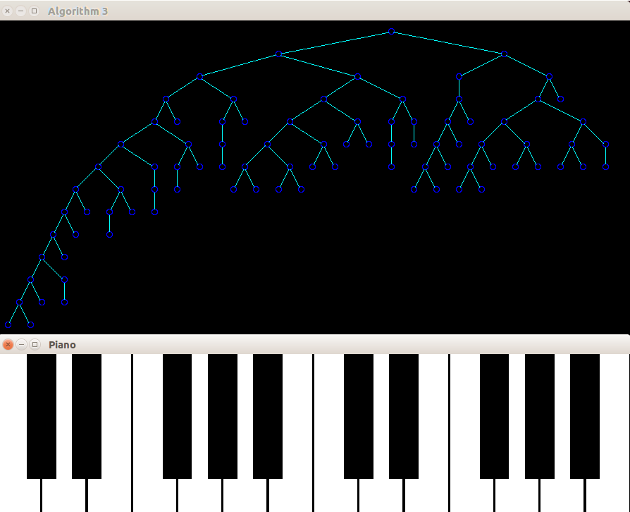

Tidy Tree Visualizations of Music
Objective:
Our assignment involved the implementation of the paper "Tidy Tree Drawings" by Wetherell and Shannon.
The task comprised of implementing a naive tree drawer and Knuth's algorithm which satisfy a few basic aesthetics of tree drawing.
We were also required to implement the proposed algorithm which used ideas from both algorithms, as well as the concept of a modifier to draw trees which look aesthetically pleasing and occupy minimum paper/screen width.
Why does our assignment stand out?
Firstly, our assignment involves a visualization of the output of trees.
Why not a visualization of the input?
We provide a cool-looking piano interface with 24 keys. A smart algorithm translates your key presses
to addition of nodes on the tree. In case it wasn't obvious, yes it produces sounds as well!
Secondly, we improved upon the algorithms provided by implementing dynamic scaling which allows for a large number of nodes to be drawn within the confines of the screen. This is achieved through a modification to the spacing parameters depending on the width and height of the tree.
Details of implementation
- Piano interface : Simple drawing of white and black rectangles which respond to computer keypresses and produce a sound. Done in OpenGL.
- Musical tones : Python script to generate sine waves through the speaker, using the Tkinter and Snacker modules.
- Inter process communication : Resource sharing and lock concept on a shared file notes.txt.
- Line and circles : Midpoint circle algorithm and Bresenham's algorithm for line drawing. We implemented a general version of the algorithm to handle various cases of slopes and point orderings.
- Periphery Drawing : Vector arithmetic is beautiful :) We find the intersection of the line joining centres with the circles and draw a line between them.
- General data structure : The tree data structure is extended to meet the needs of all the algorithms.
- Modular implementation : All algorithms simply run their own implementation of assignCoordinates() which is passed to the tree drawing routines. All algorithms read and build the tree using the same routines defined in the header treedraw.h.
Links to Algorithm pages
- Algorithm 1 - Naive Tree Drawer
- Algorithm 2 - Knuth's Algorithm
- Algorithm 3 - Wetherell and Shannon
Features of Interest
Our program allows for large height and width trees to fit in the screen.
